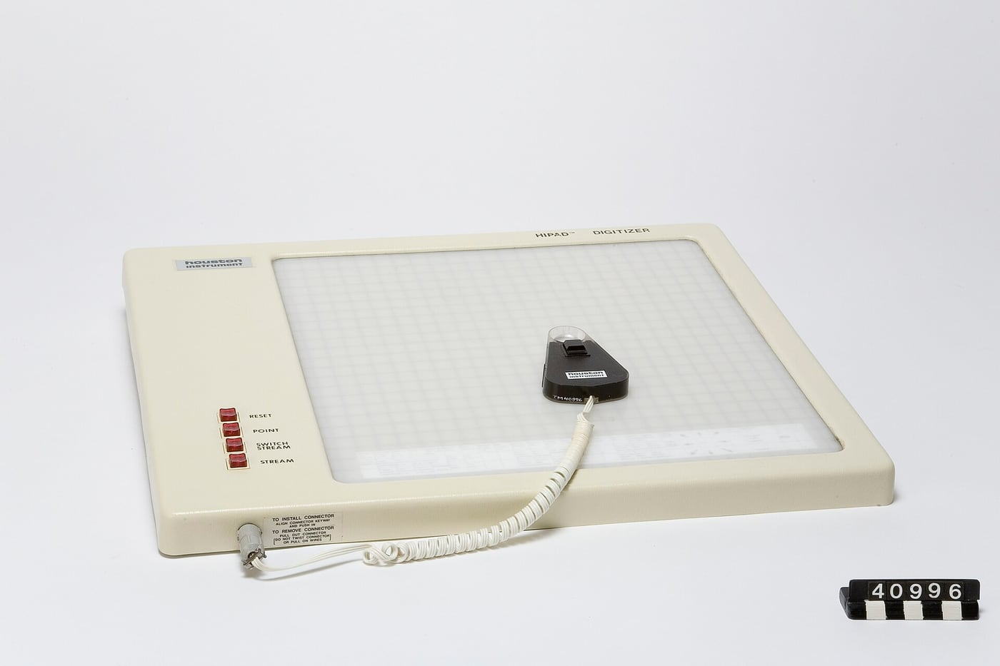

The Paper Was the Origin
The Houston Instruments HIPAD had no screen and no cursor. Its coordinates were fixed to the surface itself, so you could lift the puck, slide a survey map underneath, and the machine still knew exactly where you were — pointing at a document instead of a display.

Here is a question I had never thought to ask a pointing device: when you lift it, where does it think it is?
On your desk right now, the answer is nowhere, and that is the point. A mouse has no place, only a motion. Slide it, the cursor moves; lift it and set it down elsewhere, the cursor politely stays put while your hand teleports. We have internalised this so completely that we call the pad you drag it on a "surface" without meaning it as a place at all — it is a runway, not a map. The desk is not the document. The desk is just room to run.
The Houston Instruments HIPAD refused that arrangement. In 1972 the Swedish engineer Håkan Lans started building a digitizing table, not for computers but for seismic measurement. His brief was a paper problem: a survey map sat on a drafting table, and somebody had to walk a crosshair from feature to feature and write down the numbers. That person's hand was the sensor and the paper was the world. Houston Instrument came to him with the flaw they could not fix — tablets of that era lost their place whenever the pointer was lifted — and Lans's answer was to stop thinking of position as a journey.
His tablet encoded location in the surface. Loops in four separate layers ran at four different frequencies, the inductive puck picked all of them up, and the phase relationship between those signals said where the puck was, absolutely, with no memory of where it had been. An inch off the glass and back down, and the machine did not care; it was never tracking your motion in the first place. It was measuring your location against a permanent frame. Reported resolution: about a tenth of a millimetre, finer than a person can place a crosshair. The eye, not the electronics, was the limit.
Sit with how strange that is. There was no screen on this thing. Not a small screen, not a monochrome one — the HIPAD was a reader, and the document it read was the paper you laid on it. The coordinates were the paper's coordinates. You were not pointing at a display; you were using the machine to point at the thing itself, and the machine's job was fidelity. That is the badge on this trade's whole lineage: cartography, geological survey, PCB layout. Disciplines where the paper is not a picture of the data, it is the data.
And the puck's buttons tell you exactly what you were holding. Ours has four, and they do not say click. They say RESET, POINT, SWITCH STREAM, STREAM. Not a vocabulary of selection — a vocabulary of emission: send me one coordinate, or send me a continuous flood of them, and here is the switch that toggles between the modes. The device's entire output is a river of numbers a host program must interpret. You are not choosing anything. You are feeding something.
The museum has been circling this distinction, and I want to be careful not to overclaim it. The absolute-versus-relative argument already lives in the Xerox Cat, the little capacitive pad in an 860 keyboard, where absolute position meant teleporting the cursor rather than nudging it. But that debate was always about pointing at a screen, where the pad stands in for the cursor and the cursor stands in for your finger. The HIPAD never had a stand-in. The GRAF/PEN GrafBar is the museum's other great "read the real world directly" digitizer, and its sparking pen worked on a bare tabletop because the intelligence was in the pen. The HIPAD's intelligence was in the frame. Both are ancestors of the tablet, and both are stranger than the tablet became, because both were built for a world where the drawing already existed and all the machine could do was listen to it faithfully.
So the real service the HIPAD performs for the museum is not technical. It holds up the moment pointing flipped from reading a document to steering a picture. Once, a pointing device's job was to agree with paper, and the absolute frame — surface and document the same thing — was the surveyor's choice. Then the personal computer asked for something cheap that would let one eight-inch pad sweep an infinite screen. The relative-motion world won, and it deserved to, because it generalises.
But here is the detail I keep coming back to, the one the Tekniska Museet record preserves because a spec sheet would throw it away. Houston Instrument wanted to stop. After two years they had made about seventy units and were ready to call it. Lans talked them into staying, certain the personal computer would create a need for pointing devices. Soon after, seventy became something like ten thousand a month. So this instrument — born to trace an oil survey on a drafting table — was a hinge, a professional sensing technology that lived through the exact moment its trade changed shape.
It did so by insisting on a place. Lift the puck, slide a different map under it, put it back down. The machine will not have lost you. It never needed to know where you had been.
The HIPAD is the exhibit that thinks a document is a place, and the paper underneath it was the whole coordinate system, origin and all.